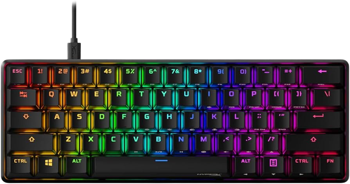
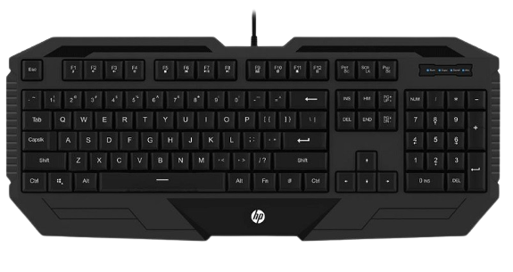

Desvendando a Tecnologia
Desvendando a Tecnologia
Teclados mecânicos
O teclado mecânico tem interruptores individuais embaixo de cada tecla que são operados por mola com pequenos contatos de metal que fecham o circuito quando você pressiona. Possuem durabilidade superior ao teclado de membrana, possuem mais velocidade e precisão ao executar um comando, ajudam bastante em jogos e em digitação. E pode ser mais confortável do que um teclado de membrana para digitação.

Teclado de membrana
São os teclados mais populares, são encontrados em escritórios, escolas, hospitais e etc. O acionamento das teclas é feito através de uma membrana de três camadas, feita de silicone e borracha, que fica entre a placa de circuito e as teclas, a responsável por enviar os comandos do usuário. É popular pelo seu preço, enquanto um bom teclado mecânico custa no mínimo 200 reais, o teclado de membrana custa 20 reais, porém possui menos velocidade e precisão em jogos e digitação, e uma vida útil menor.
